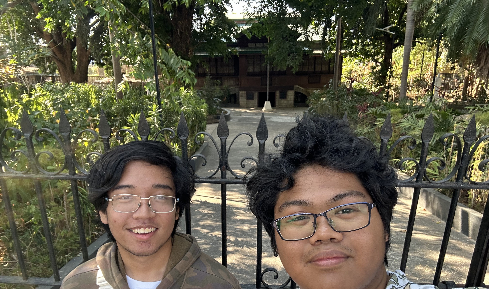
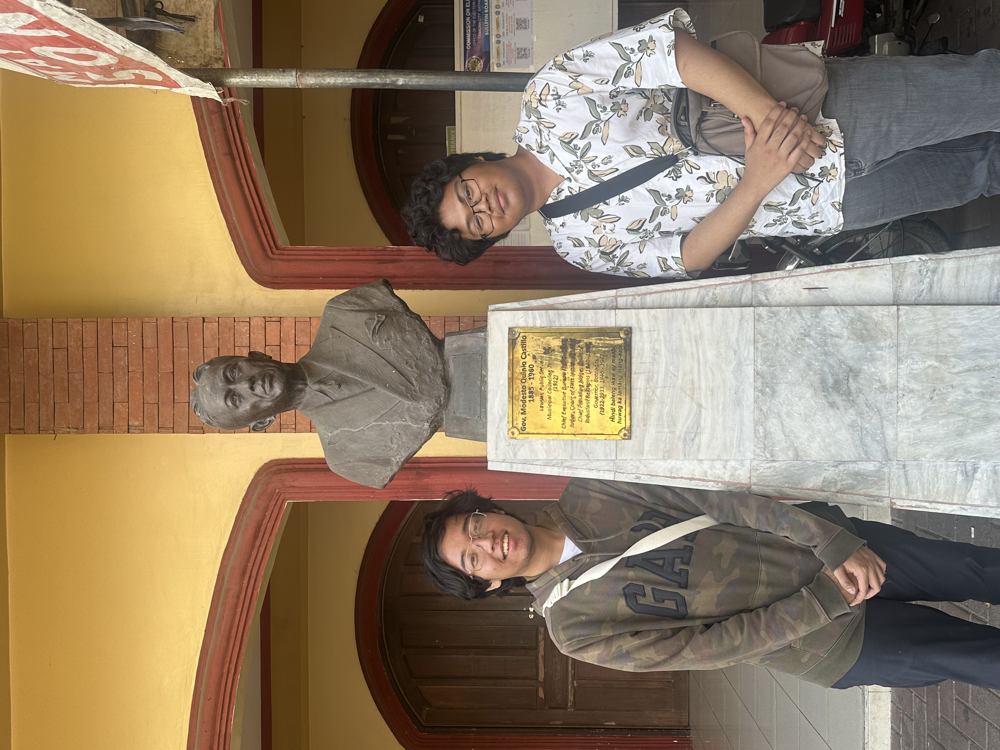
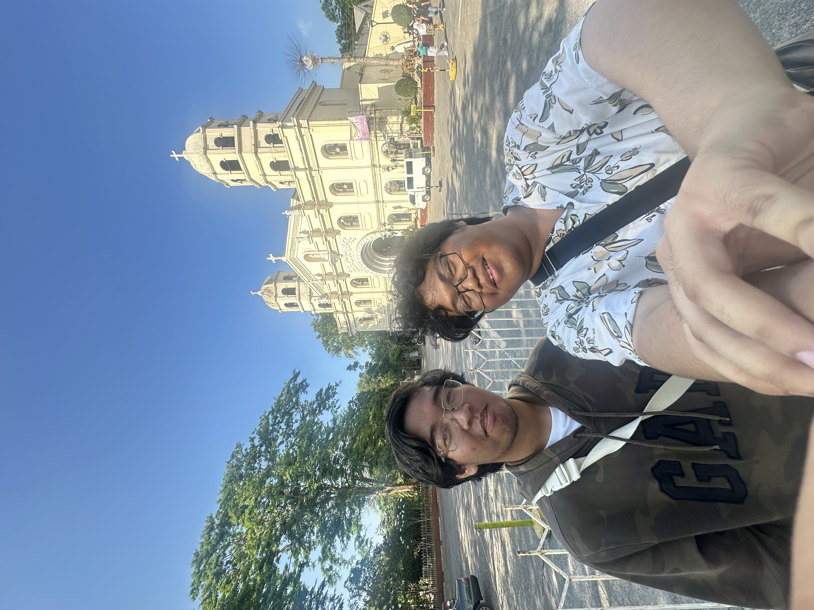
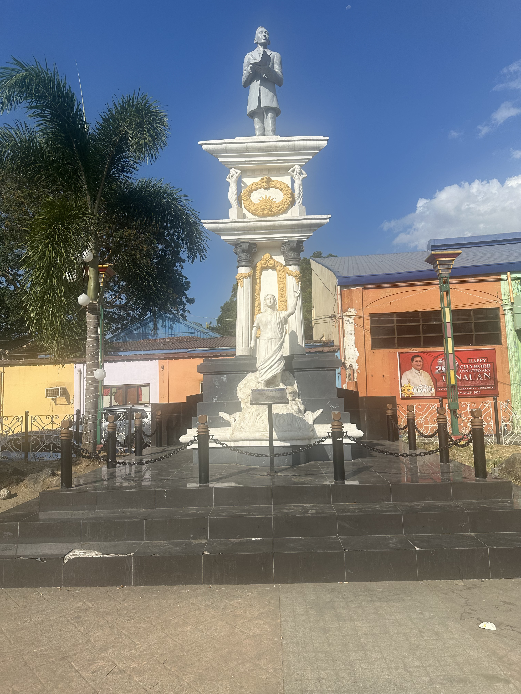
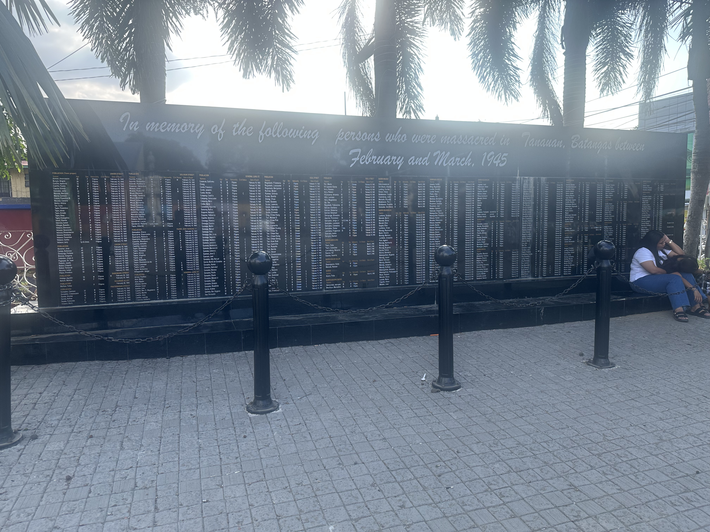
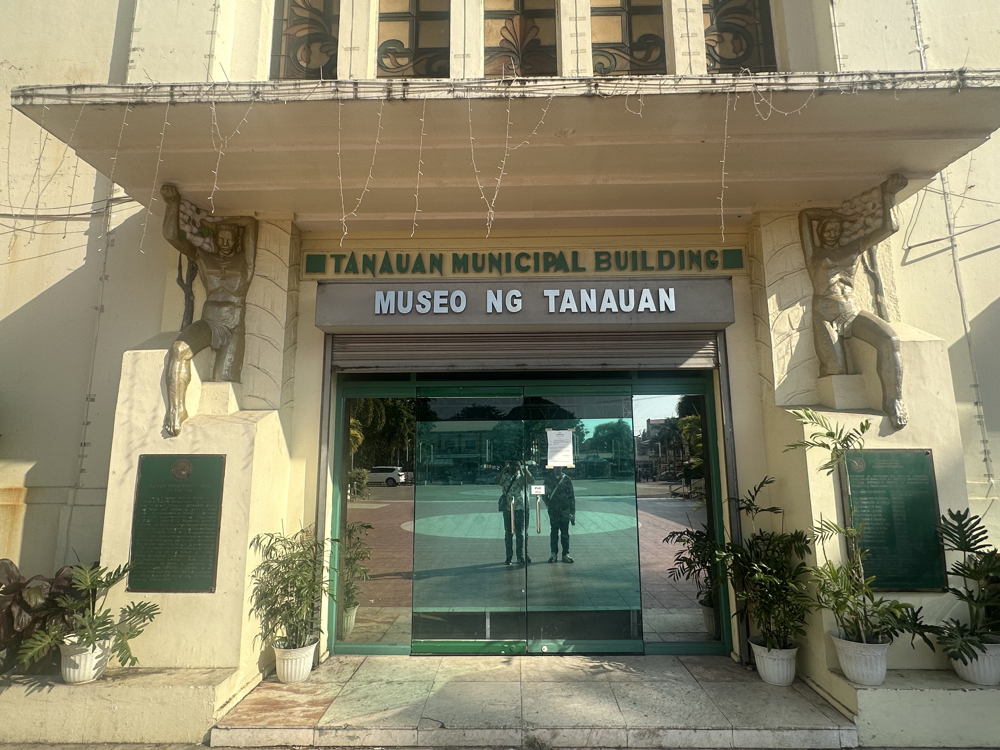
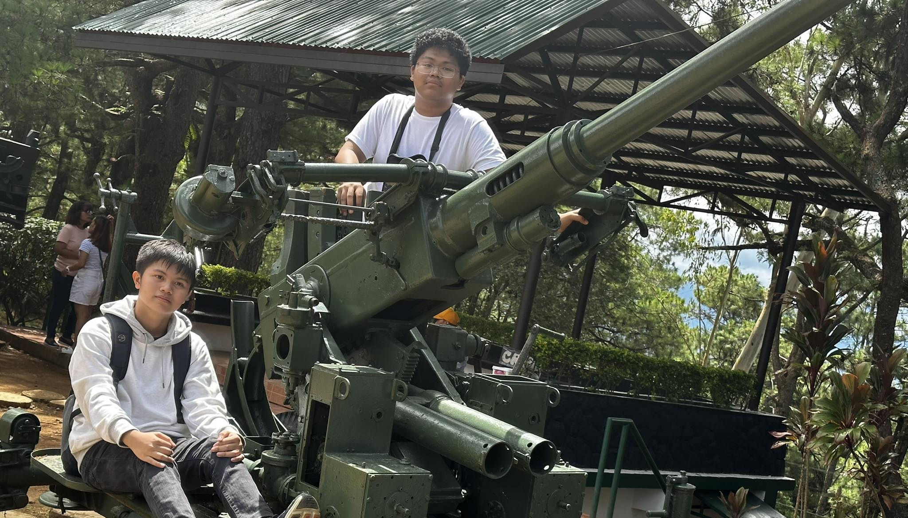
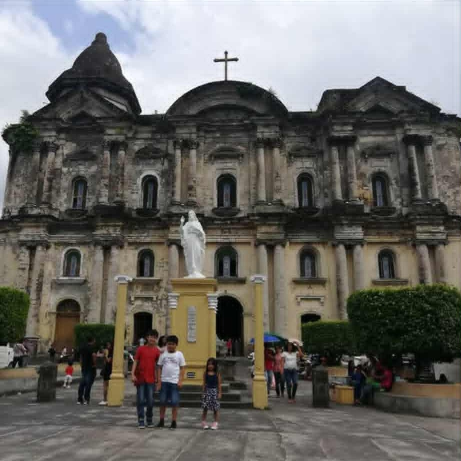

The Jose P. Laurel Ancestral House in Tanaun is the birthplace and childhood home of Jose P. Laurel who later became the President of the Philippines during World War II (1943-1945) and represents an important period in the Philippine history under Japanese occupation.

The Governmetn Modesto Memorial Cultural Center is a heritage site dedicated to former batangas governor Modesto Castillo. It servers as both a memorial and a cultural center, honoring his pubic service and preserving the site's historical connection to education and local leadership in Tanauan

it is a historic Catholic church in Tanauan Batangas and is significatnt because it dates back tot hte Spanish colobnial period and has been rebuilt multiple times due to destruction from volcanic eruptions, earthquakes, and World War II and serves as a symbol for Tanauan long religious heritage and resilience, and it is losely tied to Tanauan's colonial and wartime history as one of this oldest surviving community centers.

A national historical shrine nad museum dedicated to Apolinario Mabini, a key figure in the Philippine Revolution known as the "Brains ofthe Revolution". The site marks his birthplace and contains his emmorial, replicas of his home, and exhibits about his life and role in Philippine independence and serves as an important reminder of his contributions to Filipino nationalism and the struggle for freedom during the Spanish colonial period.

The Tanauan City War Memorial was made to dedicate the victime of World War II. It honors the people of Tanauan who died udring the Japanese occupation of the Philippines from 1941 to 1945. The names engraved on the black slab include both civillians and soldiers who suffered during the war. It stands as a tribute to their sacrifice and the city's wartime history.

A local place museum in Tanauan City, Batangas that showcases the city's history and culture. It features exhibits about important Tanauenos such as Apolinario Mabini and Jose P. Laurel, as well as artifacts from the Spanish, American, and World War II periodsa and preserves documents, photographs, and memorabilia that reflect the city's political and cultural development.

The Philippine Military Academy in Baguio City is the premier military school of the Armed Forces of the Philippines. It trains future officers of the Army, Navy, and Air Force through a strict academic, phyical, and leadership program. Established in 1905, it is located in Fort General Gregorio del Pilar in Baguio. It plays a key role in producing disciplined military leaders who serves the country.

The Taal Basillica is located in Taal, Batangas. It is considered the largest Catholic church in Asia and is one of the most important heritage churches in the Philippines. Built during the Spanish colonial period, it has been rebuilt multiple times due to earthquakes and the eruption of Taal Volcano. It stands as a major religious and historical landmark symbolizing the town's resilience.